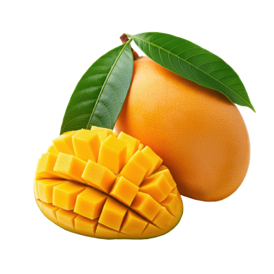

Portable Network Graphic (PNG)
Image Description
These are ripe mangoes. One is whole, while the other is sliced into a grid pattern, showing its bright yellow-orange flesh.
Image File Type
This image is a PNG. Portable Network Graphics (PNG) is a well-supported, highly compatible, widely used image file format that uses lossless compression to reduce its size. It also supports transparency. Unlike JPG, PNG files do not lose quality when saved multiple times. The file extension for PNG files is ".png."
Reason For Choosing The Image
This image is a great example of the PNG format. The PNG file type supports transparency and maintains quality without losing detail. The mango image has a clean, transparent background, which is one of the main features of PNGs. I chose a mango because it's my favorite fruit, and like PNG images, it stands out in vibrant colors.
Source
The image is from Vecteezy